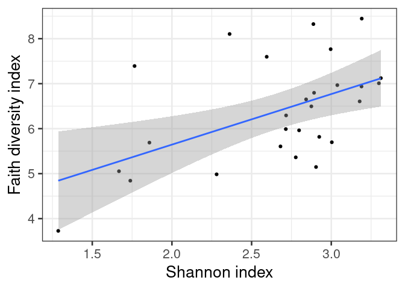

This notebook calculates alpha diversity indices.
Alpha diversity is a quantity that measures diversity of taxa in one sample. Higher numbers of unique taxa, and more even abundance distributions within a sample yield larger values for alpha diversity.
Alpha diversity is an important quantity in microbiome research. The mia package provides access to a wide variety of alpha diversity indices. As an example, we show how to calculate Shannon and Faith diversity indices.
Shannon index reflects how many different taxa there are and how evenly they are distributed within a sample. Faith index additionally takes into account the phylogenetic relations between the taxa when quantifying the overall community diversity. In both indices, higher values represent higher diversity.
# Indices to be calculated. If we don't specify indices, by default, every index
# is calculated.
indices <- c("shannon", "faith")
# Indices are stored in colData (i.e., sample metadata). We can specify the name
# of column, or we can use the default name which is the name of index
# (i.e., "shannon" and "faith").
names <- c("Shannon_index", "Faith_diversity_index")
# Calculates indices
tse <- estimateDiversity(tse, index = indices, name = names)
# Shows the calculated indices
knitr::kable(head(colData(tse)[names]))
| Shannon_index | Faith_diversity_index | |
|---|---|---|
| A110 | 1.765407 | 7.39224 |
| A12 | 2.716438 | 6.29378 |
| A15 | 3.178103 | 6.60608 |
| A19 | 2.891987 | 6.79708 |
| A21 | 2.841979 | 6.65110 |
| A23 | 2.797942 | 5.96246 |
Next we can visualize Shannon index with histogram.
# ggplot needs data.frame as input. Because colData is DataFrame, it needs to be
# converted.
shannon_hist <- ggplot(as.data.frame(colData(tse)),
aes(x = Shannon_index)) +
geom_histogram(bins = 20, fill = "gray", color = "black") +
labs(x = "Shannon index", y = "Sample frequency")
shannon_hist

# # Same thing but done differently
# # Creates histogram. With "break", number of bins can be specified. However, the
# # value is taken as a suggestion, because hist() uses pretty() to calculate breakpoints.
# hist(colData(tse)$Shannon_index, col = "green", breaks = 20,
# xlab = "Shannon index",
# ylab = "Sample frequency",
# main = "Histogram of Shannon index")
To see, if there is dependency between Shannon and Faith, we can do cross-plot i.e., scatter plot, where one index is on the x-axis and another on the y-axis.
It seems that, there is a positive correlation between these two indices.
# # Does the same thing but differently
# plot(colData(tse)$Shannon_index, colData(tse)$Faith_diversity_index,
# xlab = "Shannon index",
# ylab = "Faith diversity index",
# main = "plot()") +
# # Adds regression line
# abline(lm(colData(tse)$Faith_diversity_index ~ colData(tse)$Shannon_index))
cross_plot <- ggplot2::ggplot(as.data.frame(colData(tse)),
aes(x = Shannon_index, y = Faith_diversity_index)) +
geom_point() + # Adds points
geom_smooth(method=lm) + # Adds regression line
xlab("Shannon index") + # x axis title
ylab("Faith diversity index") # y axis title
cross_plot
## `geom_smooth()` using formula 'y ~ x'

Visualization
Next let's compare indices between different genotypes and diets. Boxplot is suitable for that purpose.
# Creates Shannon boxplot
shannon_box <- ggplot(as.data.frame(colData(tse)), aes(x = patient_status,
y = Shannon_index, fill = cohort)) +
geom_boxplot() +
theme(title = element_text(size = 12)) # makes titles smaller
# Creates Faith boxplot
faith_box <- ggplot(as.data.frame(colData(tse)), aes(x = patient_status,
y = Faith_diversity_index,
fill = cohort)) +
geom_boxplot() +
theme(title = element_text(size = 12)) # makes titles smaller
# Puts them into same picture
gridExtra::grid.arrange(shannon_box, faith_box, nrow = 2)

Statistical testing and comparisons
To further investigate if diet explains the variation of Shannon index, let's do Wilcoxon test.
Wilcoxon test is similar to Student's t-test, however, Student's t-test is parametric. It means that the data must be normally distributed. Wilcoxon test is non-parametric so it doesn't make any assumptions about the distribution.
Wilcoxon test tests if there are statistical differences between two groups. Here it tests, if western diet and control groups have different Shannon index values. As we can see, there is no difference between groups, because p-value is over 0.05, which is often used as a standard cutoff point.
# Wilcoxon test, where Shannon index is the variable that we are comparing.
# Diet - western or control - is the factor that we use for grouping.
wilcoxon_shannon <- wilcox.test(Shannon_index ~ patient_status, data = colData(tse))
wilcoxon_shannon
##
## Wilcoxon rank sum exact test
##
## data: Shannon_index by patient_status
## W = 76, p-value = 0.4879
## alternative hypothesis: true location shift is not equal to 0
Further resources
For more examples, see a dedicated section on alpha diversity in the online book.